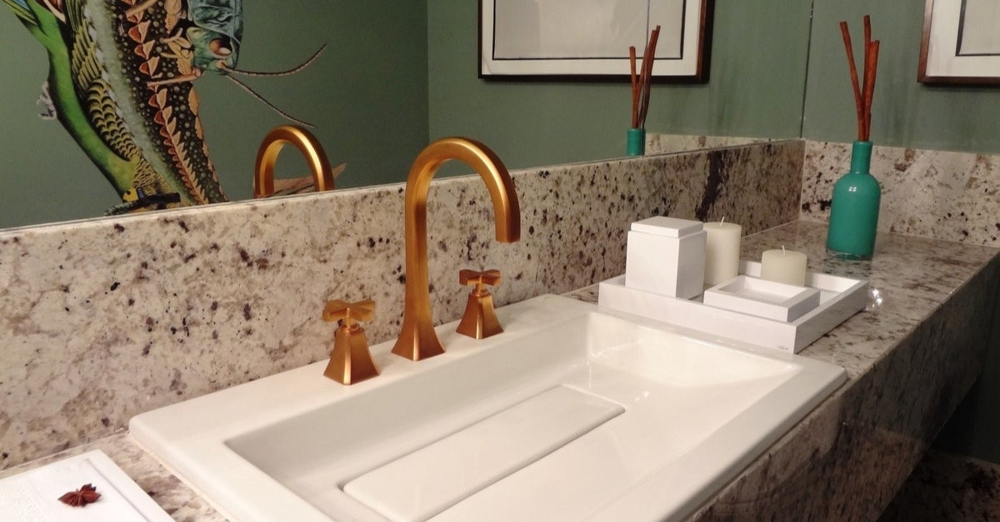

Mais Vistas

Como tirar cheiro de mofo?
5 Passos para se livrar do problema

Acessórios para banheiro indispensáveis
O que servir em festa infantil: 30 opções de doces e salgados
Últimas Dicas
BELEZA
44